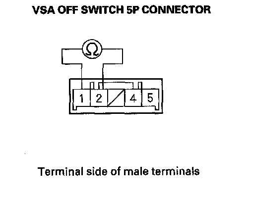

Traction Control Switch: Testing and Inspection
VSA Off Switch Test1. Remove the driver's dashboard lower cover.
2. Push out the VSA OFF switch (A) from the back of the instrument panel,
3. Disconnect the VSA OFF switch 5P connector (B).
4. Check for continuity between the VSA OFF switch 5P connector terminal No. 1 and No. 2. There should be continuity when the switch is pressed, and no continuity when the switch is released.

5. Check for continuity between the VSA OFF switch 5P connector terminal No. 4 and No. 5. There should be continuity at all times.